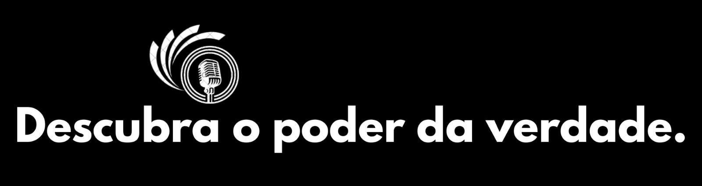

Champions League Feminina: classificados e datas das semifinais

 A Champions League Feminina conheceu os primeiros classificados para as semifinais da competição. Lyon e Chelsea eliminaram Benfica e Ajax pelas quartas de final, respectivamente, e se garantiram entre os quatro melhores do torneio.
A Champions League Feminina conheceu os primeiros classificados para as semifinais da competição. Lyon e Chelsea eliminaram Benfica e Ajax pelas quartas de final, respectivamente, e se garantiram entre os quatro melhores do torneio.
Nesta quinta-feira (28), Barcelona e Paris Saint-Germain confirmaram as últimas vagas na semifinal europeia.
As partidas da próxima fase estão previstas para os dias 20 e 21 (jogos de ida) e 27 e 28 de abril (jogos de volta). A decisão da Champions Feminina acontece em 25 de maio, no estádio San Mamés, em Bilbao, na Espanha.
O Lyon, da França, é o maior campeão do torneio, com oito títulos. Na última temporada, quem ficou com a taça foi o Barcelona, que tem duas conquistas na Champions das mulheres.
Classificados para as semifinais da Champions League Feminina
Lyon (França)
Chelsea (Inglaterra)
Barcelona (Espanha)
Paris Saint-Germain (França)
Líder da Bundesliga e cobiçado por gigantes do futebol europeu como Bayern de Munique e Liverpool, o técnico espanhol Xabi Alonso revelou nesta sexta-feira (29) que permanecerá no Bayer Leverkusen para a próxima temporada.
Em entrevista coletiva, o treinador de 42 anos afirmou que chegou a um acordo com o clube para a permanência à frente da equipe.
“Tive tempo para refletir nesta parada para os jogos de seleções. Ficarei no [Bayer] Leverkusen. Agora todas as cartas estão na mesa para ir com tudo até o fim da temporada. Aqui é o lugar em que eu quero estar”, disse Alonso.
“Meu trabalho no Bayer não terminou. Quero ajudar os jogadores a se desenvolverem. Ainda sou um treinador jovem e creio que esta é a melhor decisão para o meu futuro”, completou.
O Bayer Leverkusen, que nunca foi campeão nacional, lidera a Bundesliga com 70 pontos, dez a mais que o segundo colocado, o Bayern de Munique — dono dos últimos 11 títulos da competição. Faltam oito rodadas para o fim do torneio.
Veja tambem as categoria